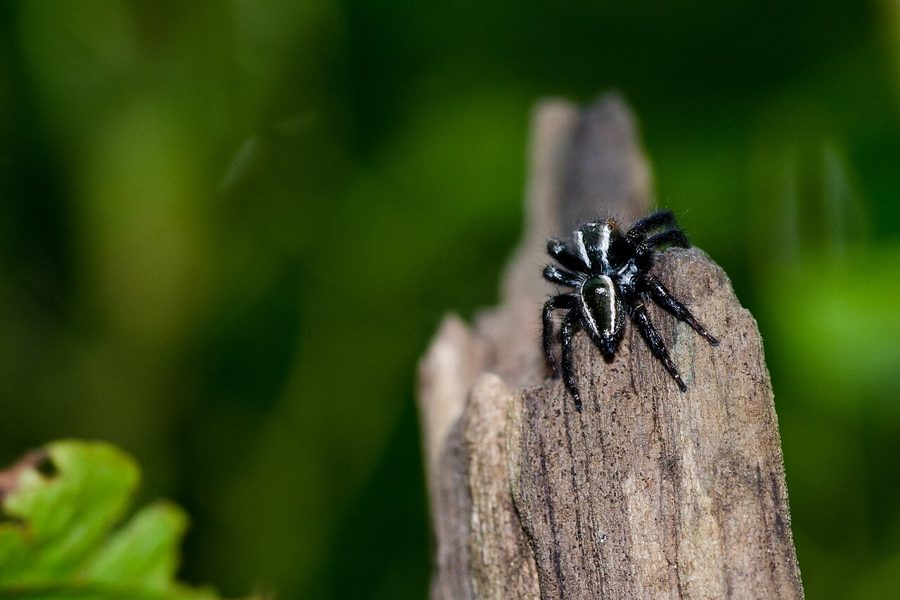

विडो जंपिंग स्पाइडरWidow Jumping Spider
Carrhotus viduus · Salticidae · SPD-0039

- Scientific name वैज्ञानिक नाम
- Carrhotus viduus (C.L.Koch, 1846)
- Family कुल
- Salticidae
- Hindi हिंदी
- विडो जंपिंग स्पाइडर
- Local names स्थानीय नाम
- widow jumping spider, viduus makdi, kali koodne wali makdi
- Status here यहाँ की स्थिति
- native
- Movement आवागमन
- Resident, here all year
- Known from कहाँ दर्ज
- Others have published records from the wider Awadh–Purvanchal plain, none yet from Basti–Ayodhya अवध–पूर्वांचल से दूसरों के प्रकाशित अभिलेख, बस्ती–अयोध्या से अभी नहीं
- IUCN IUCN
- not evaluated
- Review समीक्षा
- not yet reviewed
When to look कब देखें
Present all year. साल भर मौजूद।
Uses and possibilities उपयोग और संभावनाएँ
Drawn from the documented uses in the profile below, where each is labelled traditional, current or a research lead. All uses →
Tell it apart from इनसे अलग पहचानें
विडो जंपिंग स्पाइडर / Widow Jumping Spider
Carrhotus viduus (C.L.Koch, 1846) — Salticidae
विडो जंपिंग स्पाइडर — बागों, बगीचों, आम और अमरूद के पेड़ों के पत्तों पर पाई जाने वाली एक अत्यंत रोएंदार, गठीली और चतुर शिकारी कूदने वाली देशी मकड़ी है। इस प्रजाति में नर और मादा के रूप-रंग में भारी अंतर होता है। नर मकड़ी मखमली काले या गहरे कत्थई रंग की होती है, जिसके सिर के किनारों और अगले पैरों पर चमकीले नारंगी-लाल रोएं होते हैं, जो इसे बेहद आकर्षक रूप देते हैं। इसके विपरीत, मादा आकार में थोड़ी बड़ी होती है और हल्के पीले-भूरे रंग की होती है, जिस पर हल्के भूरे निशान बने होते हैं ताकि वह पत्तों में छिप सके। यह शिकार पकड़ने के लिए कोई जाला नहीं बनाती, बल्कि पत्तों पर छिपकर बैठती है और सामने आने वाले कीड़ों पर तेजी से उछलकर झपटती है। यह इंसानों के लिए पूरी तरह हानिरहित है।
Quick Identification त्वरित पहचान
| Feature | Description |
|---|---|
| Female Size | Body length up to 8 mm (Sebastian & Peter 2009) |
| Male Size | Body length up to 7 mm (Sebastian & Peter 2009) |
| Male Coloration | Deep velvety black or dark chocolate-brown with vibrant reddish-orange lateral hairs (Koch 1846) |
| Female Coloration | Cryptic pale yellowish-brown with subtle darker chevrons and dense greyish pubescence (Metzner 2025) |
| Pubescence | Body and robust legs densely clothed in soft, velvety hairs (Koch 1846) |
| Eyes | Forward-facing anterior median eyes prominent and surrounded by bright setae (Sebastian & Peter 2009) |
| Hunting Style | Active diurnal stalk-and-pounce foliage predator without a capture web |
Field tip: Look on the upper surface of broad orchard leaves. A stout, fuzzy jumping spider whose male is velvety black with striking orange-red fringes along its head sides and front legs, turning directly to face you, is Carrhotus viduus.
हिंदी: नर मकड़ी मखमली काली होती है जिसके सिर के किनारों पर नारंगी-लाल बाल होते हैं। मादा भूरे-पीले रंग की होती है और उसका पूरा शरीर घने रोओं से ढका होता है। यह जाला नहीं बनाती और पत्तों पर कूदकर शिकार करती है।
Morphology आकारिकी
Measurements as given in the handbooks (Koch 1846; Sebastian & Peter 2009; Metzner 2025):
| Measurement | Value | Source |
|---|---|---|
| Female body length | up to 8 mm | Sebastian & Peter (2009) |
| Male body length | up to 7 mm | Sebastian & Peter (2009) |
| Carapace shape | Broad, elevated, anteriorly flat-topped | Koch (1846) |
| Eye arrangement | Four pairs in three rows (4-2-2) | Sebastian & Peter (2009) |
The cephalothorax is broad, robust, and relatively high, with a nearly flat ocular quadrangle sloping steeply posteriorly (Koch 1846). In adult males, the carapace is covered with dense, short, velvety-black pubescence; the lateral margins and cheeks are adorned with vivid fiery-orange or brick-red hair tufts that provide intense visual contrast. The anterior median eyes are large, lustrous, and circled by small orange scales. The chelicerae are vertical, stout, and dark brown. The abdomen is broadly oval, compact, and blackish dorsally in males, sometimes bearing a pair of faint pale spots near the posterior margin (Sebastian & Peter 2009). The walking legs are thick, muscular, and heavily clothed in dark setae; the first two pairs are especially robust.
Females are markedly different: the ground color is a warm sandy-buff or tawny-yellow, heavily speckled with dark brown hairs, with the abdomen displaying an irregular median series of darker triangular chevrons (Metzner 2025). The epigyne presents two large rounded copulatory openings separated by a distinct central septum.
हिंदी: इसका शरीर मजबूत और गठीला होता है। सिर का हिस्सा चौड़ा और उठा हुआ होता है जिस पर आगे की दो बड़ी आंखें प्रमुखता से दिखती हैं। नर का शरीर मखमली काला होता है और किनारों पर लाल-नारंगी रोएं होते हैं। मादा हल्के भूरे रंग की होती है जिस पर गहरे निशान होते हैं। इसके पैर मोटे और ताकतवर होते हैं।
Behaviour & Ecology व्यवहार और पारिस्थितिकी
The Widow Jumping Spider is an arboricolous foliage specialist that spends its active hours patrolling the leaves and branches of orchard trees and ornamental shrubs. It shows a pronounced affinity for microhabitats with dappled sunlight, moderate humidity, and broad green leaves.
It hunts purely by sight, utilizing its acute forward-facing vision to locate resting flies, tiny moths, and leafhoppers. Once a potential target is spotted, Carrhotus viduus creeps forward with deliberate, cat-like precision, keeping its body low against the leaf surface. When within striking distance, it anchors a silk dragline to the leaf epidermis, tenses its muscular hind legs, and pounces directly onto the victim, gripping it tightly with its powerful front legs while delivering an incapacitating bite. During nighttime or wet weather, it constructs a dense, tubular silk shelter inside a rolled or folded leaf.
हिंदी: यह मकड़ी बागों में पत्तों पर घूम-घूम कर शिकार करती है। यह बहुत शांत और सतर्क शिकारी है। शिकार देखते ही यह चुपचाप आगे बढ़ती है और अचानक कूदकर उसे दबोच लेती है। यह रात बिताने और तेज हवा या बारिश से बचने के लिए मुड़े हुए पत्ते में रेशम का एक गोल कोकून जैसा घर बनाती है।
Life Cycle / Phenology जीवन चक्र
Seasonal phenology in northern Indian plains across the agricultural year:
| Season / Month | Stage | Field Observation |
|---|---|---|
| March–May (Summer / Zaid) | Active foraging & maturation | Sub-adults hunt among sunny foliage in orchards and home gardens |
| June–July (Monsoon onset) | Courtship displays | Velvety black males perform elaborate semaphore leg dances before females |
| August–September (Kharif peak) | Oviposition & maternal care | Females seal themselves inside rolled leaf retreats to guard egg clutches |
| October–November (Post-monsoon) | Spiderling dispersal | Newly emerged juveniles disperse actively across tree canopies |
| December–February (Rabi winter) | Winter dormancy | Adults and sub-adults overwinter in well-insulated silk cocoons under bark |
Breeding takes place primarily during the monsoon season. When a male encounters a female's silk dragline, he follows it to her location and begins an elaborate visual courtship display. Standing high on his walking legs, he rhythmically waves his orange-fringed front legs, zigzags from side to side, and vibrates his dark abdomen. Receptive females allow mating, after which the female weaves a secure, lenticular egg sac of tough white silk within a curled leaf. She stays with her eggs, defending them from ants and predatory bugs until the spiderlings hatch after several days and complete their first molt before dispersing.
हिंदी: बरसात के दिनों में इनका प्रजनन काल होता है। नर अपने नारंगी-काले पैरों को खास अंदाज में लहराकर मादा के सामने नृत्य करता है। मिलन के बाद मादा मुड़े हुए पत्ते में रेशमी थैली बनाकर अंडे देती है और उनकी रखवाली करती है। कुछ ही दिनों में अंडों से नन्हें बच्चे बाहर आ जाते हैं।
Diet and Feeding Behaviour आहार
Carrhotus viduus is an opportunistic diurnal micro-carnivore preying on foliage-associated invertebrates:
Natural prey items:
- Small lepidopterans, including micro-moths, pyralids, and small caterpillars.
- Dipteran flies, such as house flies, flower flies, and gnats.
- Hemipteran pests, including aphids, leafhoppers, planthoppers, and tree bugs.
- Small leaf beetles, thrips, and occasional small wandering spiders.
हिंदी: यह पूरी तरह मांसाहारी मकड़ी है जो बागों और फसलों के कीटों को खाती है। यह मुख्य रूप से छोटे पतंगों, मक्खियों, रस चूसने वाले माहू, भुनगों और पत्तियों पर रेंगने वाली नन्ही इल्लियों का शिकार करती है।
Predators / Natural Enemies शत्रु
Documented natural predators in northern Indian orchard and garden environments:
- Insectivorous birds: Active canopy foragers like Oriental Magpie-Robin, Black Drongo, and Common Myna capture jumping spiders from leaves.
- Spider-hunting wasps: Solitary pompilid wasps and Mud Dauber Wasp paralyze jumping spiders to provision their brood cells.
- Predatory arthropods: Foliage-hunting mantids, assassin bugs, and larger lynx spiders.
- Lizards: Arboreal garden lizards (Calotes versicolor) hunting along orchard branches.
हिंदी: दहियर, कोतवाल, मैना, मड डॉबर वास्प (कुम्हारी ततैया), शिकारी कीड़े और गिरगिट इस मकड़ी के मुख्य प्राकृतिक शत्रु हैं।
Agricultural / Human Relevance कृषि प्रासंगिकता
Beneficial orchard predator: The Widow Jumping Spider is an important native biocontrol predator in mango, guava, and citrus orchards across northern India. By actively foraging in the upper foliage and flowering panicles, it helps suppress destructive insect populations such as leafhoppers, shoot borers, and midges without inflicting any injury on crops or blossoms.
Harmless to humans: Possessing minute fangs and mild venom tailored specifically for insect prey, Carrhotus viduus is entirely non-venomous to humans and household animals.
Traditional: Recognized by orchard growers as a harmless, fuzzy jumping spider (kali koodne wali makdi).
Today: Valued in horticultural integrated pest management programs as a bioindicator of ecologically sound orchard management.
Research direction (a lead, not a result): Assessing the predation rate of Carrhotus viduus on mango hopper (Amritodus atkinsoni) nymphs in eastern Uttar Pradesh orchards.
हिंदी: यह बागवानों और किसानों के लिए एक बहुत उपयोगी मित्र कीट है जो आम और अमरूद के बागों में हानिकारक कीड़ों और हॉपर कीटों को खाकर प्राकृतिक नियंत्रण करती है। यह इंसानों के लिए पूरी तरह हानिरहित है।
Expected Locally स्थानीय रूप से अपेक्षित
Not a field record. Written from published accounts for eastern Uttar Pradesh. No confirmed local sighting yet — if you have seen it, that is what the atlas needs.
अभी तक स्थानीय पुष्टि नहीं। यह विवरण प्रकाशित स्रोतों से है, किसी अवलोकन से नहीं।
The Widow Jumping Spider is expected across eastern Uttar Pradesh in mature fruit orchards, home gardens, village groves, and roadside vegetation. Look on the upper foliage of mango, guava, and ficus trees from April through October. GBIF holds published records from the wider Awadh–Purvanchal plain, none yet from Basti–Ayodhya. A voucher photograph showing the velvety black male with orange head fringes or the mottled female, submitted via the About page, would confirm the first local documentation for the project area.
Distribution वितरण
Global range: Widespread across South and Southeast Asia, natively occurring in India, Sri Lanka, Nepal, Myanmar, Thailand, Malaysia, and Indonesia (World Spider Catalog 2025).
In India: Recorded widely across peninsular, eastern, and northern states, including Kerala, Karnataka, Maharashtra, West Bengal, and Uttar Pradesh (Caleb & Sankaran 2025).
In Uttar Pradesh: Documented from botanical gardens, university campuses, and rural orchard belts across the Gangetic plain.
In Basti district / eastern UP: Expected as a resident native species in orchard tracts and garden vegetation.
हिंदी: यह भारत, श्रीलंका, नेपाल और दक्षिण-पूर्व एशिया में पाई जाती है। उत्तर प्रदेश में यह आम के बागों और ग्रामीण बगीचों में सामान्य रूप से उपस्थित है।
Research Questions शोध प्रश्न
- How do varying levels of sunlight exposure in orchard canopies affect the display intensity and mating success of male Carrhotus viduus? / धूप और छांव का नर मकड़ी के प्रजनन नृत्य पर क्या असर पड़ता है?
- What is the seasonal predation rate of Carrhotus viduus on mango hoppers (Amritodus atkinsoni) during the spring flowering season?
- How do the dense velvety body setae contribute to water retention and heat insulation during hot pre-monsoon summer winds (loo)? / क्या इसके शरीर के घने बाल इसे गर्मियों की लू और शुष्कता से बचाते हैं?
- What visual cues allow males to locate female retreats concealed within rolled leaves?
- How severely do commercial organophosphate sprays impact resident populations of Carrhotus viduus in mango agroecosystems?
Similar Species मिलती-जुलती प्रजातियाँ
| Species | Key Differences | |
|---|---|---|
| Carrhotus viduus (Widow Jumping Spider) | Densely pubescent body; male velvety black with vibrant reddish-orange lateral hairs; body up to 8 mm (Sebastian & Peter 2009) | |
| Thyene imperialis ([[imperial_jumping_spider\ | Imperial Jumping Spider]]) | Carapace elevated with coppery-orange top and white side stripes; first legs heavily fringed with black setae (Sebastian & Peter 2009) |
| Hasarius adansoni ([[adansons_jumping_spider\ | Adanson's Jumping Spider]]) | Male black with a bold white crescent band on rear head and white abdominal spots; less fuzzy (Metzner 2025) |
| Phintella vittata ([[banded_phintella\ | Banded Phintella]]) | Body smaller, slender; brilliant metallic blue-green and yellow longitudinal bands (Sebastian & Peter 2009) |
Field rule: A stout, fuzzy jumping spider whose male is velvety black with striking orange-red hair fringes along the head sides and front legs, actively prowling sunny foliage without a web, is Carrhotus viduus.
हिंदी: अडांसन जंपिंग स्पाइडर के सिर पर सफेद अर्धचंद्राकार पट्टी होती है, जबकि विडो जंपिंग स्पाइडर का नर मखमली काला होता है जिसके सिर के किनारों पर नारंगी-लाल बाल होते हैं।
Taxonomy & Classification वर्गीकरण
Original description. Described by Carl Ludwig Koch in 1846 as Plexippus viduus in Die Arachniden, volume 13, page 40, plate 438, figure 1109. Type locality: Bintan Island, Indonesia.
Subspecies. Monotypic — no subspecies are currently recognized across its range.
Family and order placement. Order Araneae, suborder Araneomorphae, family Salticidae, subfamily Salticinae, tribe Salticini. The genus Carrhotus Thorell, 1891, contains approximately 30 described species worldwide.
Phylogenetic notes. Carrhotus viduus is characterized by dense somatic pubescence, robust anterior legs, and unique male palpal morphology featuring an unbranched embolus and rounded tegulum (World Spider Catalog 2025).
IUCN status rationale. Not evaluated (NE) on the global IUCN Red List of Threatened Species. It maintains widespread, viable populations across South and Southeast Asia.
हिंदी: इसका वैज्ञानिक नाम Carrhotus viduus है और यह Salticidae (कूदने वाली मकड़ियों) परिवार की सदस्य है।
Photo Gallery फोटो गैलरी
No photos yet — add field photos to media/species/widow_jumping_spider/ and run node scripts/sync_photos.js.
Photos needed आवश्यक फोटो
- [ ] Dorsal view of adult male showing velvety black body and orange head fringes (मखमली काले शरीर और नारंगी रोओं की पूरी तस्वीर)
- [ ] Frontal close-up showing large primary eyes and stout front legs (बड़ी आंखों और मोटे पैरों का क्लोज़-अप)
- [ ] Cryptic female camouflaged on a green leaf (पत्ते पर बैठी भूरे रंग की मादा)
- [ ] Adult feeding on a captured orchard pest (कीट का शिकार करती मकड़ी)
References संदर्भ
- Koch, C. L. (1846). Die Arachniden. Band 13, Nürnberg, p. 40, pl. 438, fig. 1109.
- Sebastian, P. A. & Peter, K. V. (2009). Spiders of India. Universities Press, Hyderabad, pp. 290–292.
- Metzner, H. (2025). Jumping spiders (Arachnida: Araneae: Salticidae) of the world. Online database, verified via jumping-spiders.com.
- Caleb, J. T. D. & Sankaran, P. M. (2025). Araneae of India. Version 2025. Online checklist.
- World Spider Catalog (2025). World Spider Catalog, Version 26.0. Natural History Museum Bern.
- GBIF Occurrence Data — Carrhotus viduus, India (2025).
Source file: species/fauna/spiders/widow_jumping_spider.md